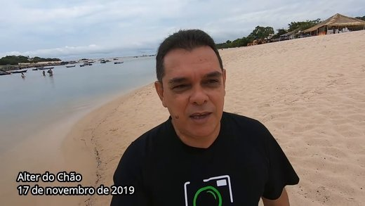

00:00:35.302
Emanuel Júlio, de camiseta preta do Turismo Aqui, aparece na praia, com areia e pequenas embarcações ao fundo. O letreiro indica Alter do Chão e a data da gravação.
Alter do Chão, Santarém (PA) · confirmado
O apresentador situa a gravação em Alter do Chão no domingo, 17 de novembro de 2019.
Transcrição · 00:00:23 | 00:00:33 | 00:00:39
Turismo Aqui — quadro de vídeo publicado no YouTube